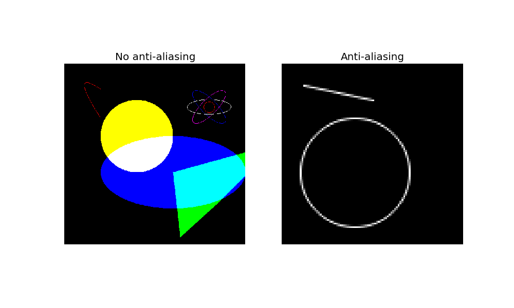

This example shows how to draw several different shapes: * line * Bezier curve * polygon * circle * ellipse
import math
import numpy as np
import matplotlib.pyplot as plt
from skimage.draw import (line, polygon, circle,
circle_perimeter,
ellipse, ellipse_perimeter,
bezier_curve)
fig, (ax1, ax2) = plt.subplots(ncols=2, nrows=1, figsize=(10, 6))
img = np.zeros((500, 500, 3), dtype=np.double)
# draw line
rr, cc = line(120, 123, 20, 400)
img[rr, cc, 0] = 255
# fill polygon
poly = np.array((
(300, 300),
(480, 320),
(380, 430),
(220, 590),
(300, 300),
))
rr, cc = polygon(poly[:, 0], poly[:, 1], img.shape)
img[rr, cc, 1] = 1
# fill circle
rr, cc = circle(200, 200, 100, img.shape)
img[rr, cc, :] = (1, 1, 0)
# fill ellipse
rr, cc = ellipse(300, 300, 100, 200, img.shape)
img[rr, cc, 2] = 1
# circle
rr, cc = circle_perimeter(120, 400, 15)
img[rr, cc, :] = (1, 0, 0)
# Bezier curve
rr, cc = bezier_curve(70, 100, 10, 10, 150, 100, 1)
img[rr, cc, :] = (1, 0, 0)
# ellipses
rr, cc = ellipse_perimeter(120, 400, 60, 20, orientation=math.pi / 4.)
img[rr, cc, :] = (1, 0, 1)
rr, cc = ellipse_perimeter(120, 400, 60, 20, orientation=-math.pi / 4.)
img[rr, cc, :] = (0, 0, 1)
rr, cc = ellipse_perimeter(120, 400, 60, 20, orientation=math.pi / 2.)
img[rr, cc, :] = (1, 1, 1)
ax1.imshow(img)
ax1.set_title('No anti-aliasing')
ax1.axis('off')
"""
Anti-aliased drawing for:
* line
* circle
"""
from skimage.draw import line_aa, circle_perimeter_aa
img = np.zeros((100, 100), dtype=np.double)
# anti-aliased line
rr, cc, val = line_aa(12, 12, 20, 50)
img[rr, cc] = val
# anti-aliased circle
rr, cc, val = circle_perimeter_aa(60, 40, 30)
img[rr, cc] = val
ax2.imshow(img, cmap=plt.cm.gray, interpolation='nearest')
ax2.set_title('Anti-aliasing')
ax2.axis('off')
plt.show()
Python source code: download (generated using skimage 0.9.0)